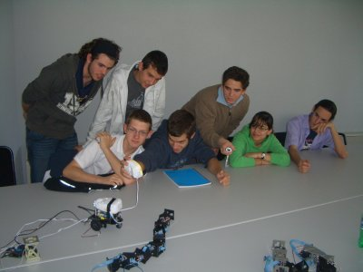
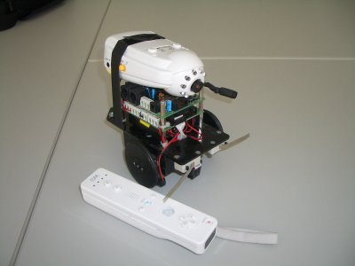

Fernando Remiro me invitó a dar el sábado 12 de Abril una charla sobre robótica modular y locomoción en la Escuela Politécnica Superior de la UAM dentro del programa de actividades para alumnos de altas capacidades de la comunidad de Madrid.
Además de enseñar en vivo las configuraciones mínimas y el robot Hypercube, estuvimos “frikeando” un poco. Movimos el Robot Skybot con el mando de la wii. Enganchamos una cámara inhalámbrica al Skybot, de manera cutre (con cinta aislante) y pudimos controlarlo con el wiimote mientras veíamos las imágenes transmitidas por una pantalla LCD. Fue muy divertido 😉

Habíamos “improvisado” un robot como Yoshua, pero usando el skybot y el wiimote. La cámara usada es una que me habían regalado cuando nació mi hijo Juan. De esas que se ponen junto al bebé y puedes verlo y oirlo desde otra habitación.
Aquí hay más información, incluidas las transparencias de la charla.